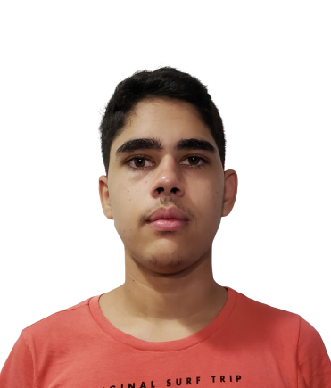

Desenvolvedores do Projeto

Carlos Wesley, 24 anos, paulista, Psicólogo e pesquisador.

Meu nome é Marcus, tenho 24 anos e moro em Ananindeua no Estado do Pará. Sou formado em
Licenciatura em Matemática pela Universidade do Estado do Pará e atualmente estudo programação na Blue
EdTech.

Me chamo Ana Carolina, tenho 20 anos e moro no Rio de Janeiro. No começo de 2021 começa
minha jornada para me tornar programadora, passei para a Blue EdTech e estou estudando para realizar
meus sonhos e mudar a minha vida.

Meu nome é Steffany Sympson. Carioca por nascimento e criação, 31 anos, Engenheira, Perita
Judicial e Dev em desenvolvimento. Três anos depois de formada em engenharia descobri gosto pela
tecnologia e então resolvi arriscar e recomeçar...

Meu nome é Cauã Campos, tenho 16 anos e moro no Recife. Comecei esse ano com essa intriga
que eu tenho em programação, meu primeiro contato com programação foi com o curso da Blue que ainda
estou fazendo. Aprendi o básico de Python e agora estou na estrada do Front-End.